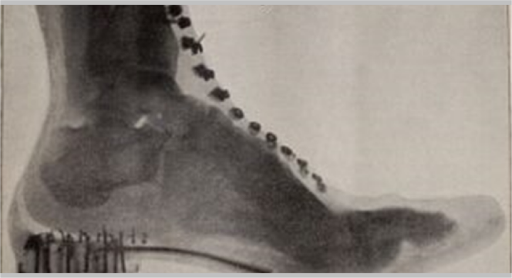
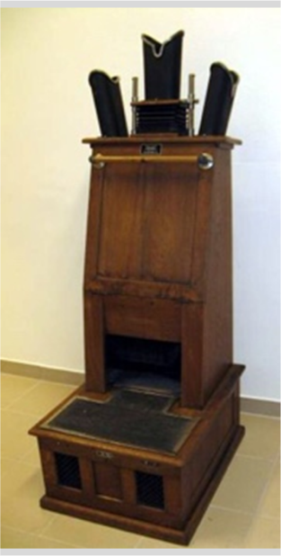

레오파트라 에디슨 컬렉션 2호
'에디슨 X-Ray'
Edison X-ray Viewer + X-Ray Control Panel + X-Ray Reader 에디슨 엑스레이 뷰어, 1896 + 제너럴 일렉트릭 엑스레이 컨트롤 패널, 1940 + 제너럴 일렉트릭 엑스레이 리더기, 1940
Edison X-Ray
Viewer, 1896

X-Ray Control
Panel, 1940

General Electric
X-Ray Reader
엑스레이는 인간의 눈에는 보이지 않지만 물질의 원자 구조인 인체 내부를 보여주었고 인체과학에 큰 영향을 주었습니다. X선은 1785년 이전부터 여러 사람으로 하여금 발견이 되었지만 빌헬름 뢴트겐이 그 성질을 철저히 연구하여 1901년 노벨상을 수상하면서 세상에 알려지기 시작했습니다. 뢴트겐의 아내가 결혼반지를 끼고 있는 사진을 촬영한 것이 그 시초입니다. 뢴트겐은 특허를 낼 수 있는 상황이었지만, 본인의 이름으로 특허를 내지 않고 학계에 내용을 보고하여 많은 사람들이 사용할 수 있게 하였습니다.
Thomas Edison은 이 신비한 광선에 대해 들었을 때 고도로 숙련된 유리 송풍기 조수인 Clarence Dally와 함께 새로운 종류의 전기 조명을 생성하기 위해 X선을 이용하는 방법을 살펴보는 일련의 실험을 시작하게 되었고, 1896년 5월 뉴욕에서 열린 전미 전기 조명 협회에서 에디슨은 X-Ray 투시경을 처음 공개 시연 했습니다. 이 실험은 에디슨의 조수였던 Dally가 불과 39세의 나이에 X선 노출로 인한 최초의 사망으로 기록 되면서 연구는 중단이 되었습니다.

Thomas Edison이 Clarence Dally의 손을 X-Ray 투시경으로 직접 검사하는 모습
투시경을 사용하여 야전 의사가 부상당한 병사에게 깊숙이 박힌 총알이 있는지 검사합니다.
1917년, 프랑스 Neuilly.

X선관 형광등으로 촬영한 Thomas Edison(화살표)
Thomas Edison은 X선이란 신비한 광선에 대해 들었을 때 24세부터 유리 송풍기 기술자로 일하고 있던 Clarence Dally를 책임자로 동료들과 함께 약 1300가지 화합물을 유리 불기 기술을 사용하여 열정적으로 작업에 착수하여 수천 개의 다양한 X선 튜브 프로토타입을 제작했습니다. 그리고 텅스텐산칼슘이 뢴트겐의 바륨 플라티노시아나이드 보다 12,000배 더 밝은 형광 빛을 낸다는 것을 발견하게 됩니다.
1896년 5월 뉴욕에서 열린 전미 전기 조명 협회에서 에디슨은 X-Ray 투시경을 처음 공개 시연 했습니다. 투시경을 통해 본인의 뼈를 본 대중들은 놀라움을 금치 못했습니다.
clarence-dally-a-technician-in-trouble/
https://todayinsci.com/E/Edison_Thomas/
EdisonFearsXRays.htm
1896년 5월 뉴욕시에서 열린 에디슨의 형광투시 전시회에서 댈리는 맨 오른쪽에서 볼 수 있습니다.
1940년, 연속적인 동영상을 보여주는 흉부 형광경으로 검사를 받고 있는 환자. 이 이미지는 X선 절차 중 방사선 노출이 무시할 수 있을 것이라고 주장하는 데 사용되었습니다.
미국 FDA 에디슨 X-ray 공헌도 인정
신발 R-ray 사진 (군화)
신발 X-ray 머신
또한, 미국 FDA에서도 에디슨의 X-ray는 공헌도를 인정을 받게 되면서, 일반 생활업계에서도 이 X-ray 기술을 이용한 사업들이 나오기 시작 했습니다. 그 중에 가장 일반인들에게 알려진 것은 의외로 신발제작으로 번진 것입니다. 1차 세계 대전 군인들의
발에 대한 방사선 사진을 장화에 사용하여 적합성을 평가하려는 군대의 노력에 의해 촉진되었습니다.
Boston의 Jacob Low는 부상당한 군인의 발을 평가하기 위해 형광투시법을 사용했습니다. 전쟁이 끝났을 때 그는 신발
가게에서 사용하기 위해 기술을 변경했으며, 신발 제작 판매를
위한 사업으로 "Foot-o-scope" 라고도 합니다.